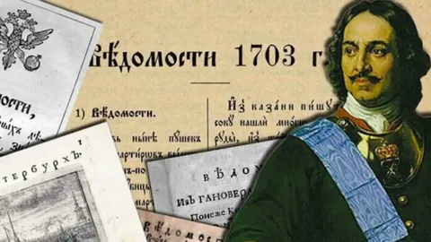
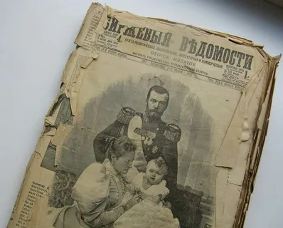

Этапы развития периодических изданий в России
Периодические издания представляют собой ключевой элемент системы массовых коммуникаций, выполняющий функции просвещения, распространения знаний, культурного развития и формирования общественных взглядов. Пресса служит эффективным инструментом как для изучения, так и для активного воздействия на общественное мнение и воспитания граждан.

Появление периодики в России произошло значительно позднее, чем в странах Западной Европы — разрыв составил около ста лет. Отсчёт истории отечественной периодической печати традиционно ведётся с первой печатной газеты «Ведомости», основанной в 1702 году по указу и при личном участии Петра I. Её создание было обусловлено политическими, экономическими и культурными переменами начала XVIII века. Однако у «Ведомостей» был предшественник — рукописные «Куранты» (или «Вестовые письма»), которые носили закрытый характер и предназначались исключительно для царя и высшей власти, отражая государственные интересы, в отличие от многих западных газет, ориентированных на коммерцию. В XVIII веке также стали выходить «Санкт-Петербургские ведомости» (1728) и «Московские ведомости» (1756).

И газеты, и журналы генетически связаны с книгой, переняв многие её черты. Первые журналы возникли как приложения к газетам, а позже выделились в самостоятельные форматы. Их содержание и оформление определялись историческим контекстом, а также социально-экономическими и культурными запросами общества.

К моменту отмены крепостного права в 1861 году в России сложилась система газет, находившаяся под значительным влиянием правительства, стремившегося контролировать информационное поле. На её формирование также воздействовали оппозиционные и антикрепостнические настроения среди дворянства и буржуазии. Система должна была учитывать растущие политические, экономические и культурные потребности населения.
В 1890-е годы, в условиях развития капитализма и обострения классовых противоречий, роль прессы в идеологической, экономической и культурной жизни возросла. Рабочее движение набирало силу, а «Союз борьбы за освобождение рабочего класса» распространял своё влияние. Популярность приобретали нелегальные рабочие «листки», призывавшие к улучшению условий труда. Правительство, стремясь подавить протесты, ужесточало контроль над печатью: в 1893 году были запрещены публикации о взаимоотношениях рабочих и предпринимателей, а выдача разрешений на новые издания ограничивалась.
Несмотря на это, количество периодики быстро росло: в 1890 году выходило 796 изданий, а к 1900 году — уже 1002, из которых более 200 были общественно-политическими. Центрами журналистики оставались Петербург и Москва, но активное развитие происходило и в регионах — Киеве, Харькове, Одессе и других городах. Появлялись оперативные издания: справочные бюллетени, рекламные «листки». Часть прессы, как, например, «Губернские ведомости», поддерживала официальный курс. Рупором консервативных кругов были газеты «Гражданин», «Новое время», «Московские ведомости» и другие.
На рубеже XIX–XX веков Россия переживала бурные перемены: экономический рост, развитие науки и культуры, нарастание революционных настроений. К 1913 году число изданий приблизилось к 2915, включая около 620 ежедневных газет. Совершенствовались полиграфия и литературное мастерство. Широкую известность получили такие издания, как «Советник», «Биржевые ведомости», «Русские ведомости», «Речь» и другие.
Для начала XX века характерно проникновение капиталистических отношений в журналистику и подчинение прессы интересам крупного капитала, что сближало её с западными моделями. Однако особенностью России стало появление как легальных, так и нелегальных большевистских изданий («Наше знамя», «Окопная правда», журнал «Интернационал» и др.).
История советской прессы неразрывно связана с историей государства. Ведущую роль играла газета «Правда» (издаётся с 1912 года), освещавшая ключевые события. После Октябрьской революции возникли «Известия», «Гудок», а позже — «Сельская жизнь» и «Труд», ориентированные на воспитание рабочих и крестьян.
В годы Великой Отечественной войны пресса стала важнейшим инструментом пропаганды и организации. Издания оперативно реагировали на события, разъясняли решения власти, мобилизовывали население. Газеты «Правда», «Красная звезда», «Советский флот» и другие находились на передовой, публикуя информацию о подвигах солдат, тактике войск и разоблачая врага. Особую роль играли военные корреспонденты.
В послевоенный период пресса освещала восстановление страны, трудовые достижения, вопросы морали. Активно обсуждались темы семьи, здоровья, воспитания — этому посвящались журналы «Работница», «Крестьянка», «Семья и школа» и другие.
После распада СССР в 1991 году количество СМИ резко возросло: к 1996 году было зарегистрировано около 27 тысяч изданий. Однако этот рост часто носил хаотичный характер: появлялись маломощные издания без профессиональных кадров и устойчивого авторитета, многие быстро закрывались. Если в советское время тиражи ведущих газет достигали миллионов экземпляров (например, «Аргументы и факты» — 33 млн), то к 1997 году тиражи упали в разы. Популярность стали приобретать недорогие еженедельники с тиражами в 10–20 тысяч.
В современной России трудно представить жизнь без прессы. По данным на начало 2014 года, в государственном реестре было зарегистрировано около 88 тысяч СМИ. Российский медиарынок демонстрирует высокие темпы роста, уступая лишь рынкам Индии и Китая. Широкое распространение и доступность печатного слова позволяют ему оперативно достигать любой аудитории и социальной среды, играя ключевую роль в формировании общественной активности граждан.
Сегодня, продолжая славные традиции отечественного книгопечатания и периодики, свою лепту в это важное дело вносит и современное производство. Типография «Лазурь» (ООО ИПК «Лазурь»), как и многие поколения печатников до неё, работает над тем, чтобы слово, облечённое в качественную полиграфическую форму, продолжало достигать своего читателя, оставаясь надёжным источником знаний, идей и культурных ценностей в наш динамичный век.